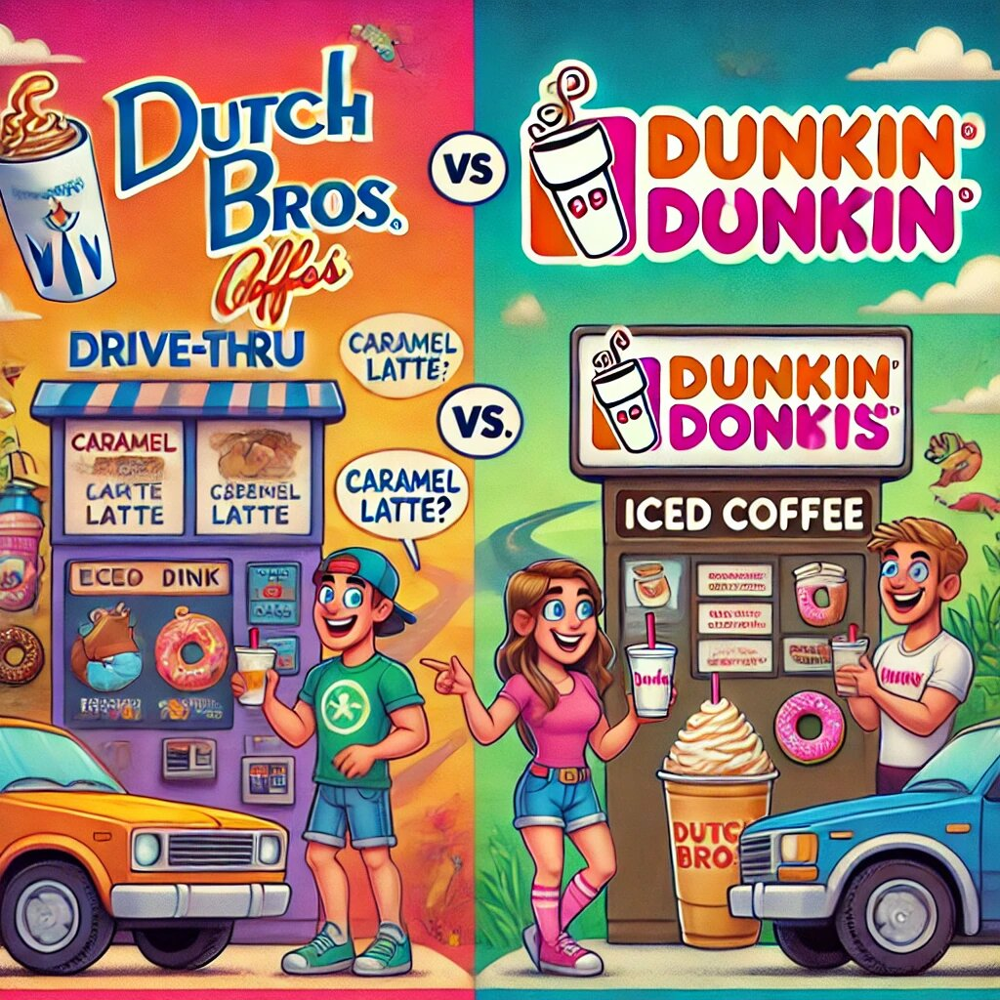

Dutch Bros vs. Dunkin: A Battle of Coffee Giants
When it comes to grabbing your morning brew or an afternoon pick-me-up, Dutch Bros and Dunkin are two names that often come up in the coffee world. While both are beloved brands in their own right, they offer distinct experiences, catering to different tastes, preferences, and lifestyles. So, let’s dive into what makes these coffee heavyweights stand out and why they’ve earned their loyal fan bases.
Dutch Bros: The Cool Kid on the Coffee Block
Dutch Bros, founded in 1992 in Grants Pass, Oregon, is a relative newcomer compared to the more established Dunkin. Despite its young age, Dutch Bros menu prices has managed to carve out a unique identity with its vibrant vibe, community focus, and sugary-sweet concoctions.
Vibes and Culture
Step into a Dutch Bros drive-thru or walk-up kiosk, and you’ll notice the energy is infectious. The brand prides itself on being upbeat, friendly, and a little quirky. Employees, known as “Broistas,” are trained to deliver not just coffee but also a positive experience. From their cheerful greetings to their willingness to chat about your day, Dutch Bros feels less like a transaction and more like a visit to a friend’s house—if your friend were a caffeine aficionado.
Signature Drinks
If there’s one thing Dutch Bros is known for, it’s their creative menu. From the iconic Annihilator to the Rebel Energy Drinks line, the offerings are bold, sweet, and often a little over the top. Customization is key here. Want your caramel latte with an extra shot of espresso, whipped cream, and a drizzle of chocolate? No problem. Dutch Bros is all about making your drink exactly the way you like it, even if it sounds like a dessert disguised as coffee.
Community Spirit
Dutch Bros goes beyond coffee, actively engaging with local communities through charitable initiatives. Their “Dutch Luv Day” and other fundraising events highlight their commitment to giving back. It’s not uncommon to see Dutch Bros actively participating in local events or supporting causes, which has helped solidify its reputation as a feel-good brand.
Dunkin: The Reliable Old Guard
Dunkin, formerly known as Dunkin’ Donuts, has been around since 1950, making it a staple in the coffee and donut world. With a name that’s synonymous with convenience and familiarity, Dunkin has evolved over the decades to stay relevant while holding onto its core identity.
Fast and Functional
Dunkin is like the no-nonsense friend who always gets the job done. Whether you’re rushing to work, hitting the road for a trip, or just craving a quick caffeine fix, Dunkin delivers. The emphasis here is on efficiency. With thousands of locations, Dunkin ensures you’re rarely far from a cup of coffee or a bag of donuts.
Classic Menu Favorites
While Dunkin has expanded its menu to include trendy items like avocado toast and cold brews, its heart still lies in the classics. Think medium-roast coffee, glazed donuts, and breakfast sandwiches. The menu is straightforward, and while it doesn’t scream innovation, it nails the basics.
Brand Evolution
Over the years, Dunkin has undergone a transformation, rebranding from Dunkin’ Donuts to simply Dunkin to emphasize its coffee and beverage offerings. This shift has helped it appeal to a broader audience while maintaining its identity as a comfort-food go-to.
Head-to-Head: What Sets Them Apart?
1. Atmosphere
Dutch Bros is all about energy, creativity, and a personalized experience. The staff’s friendliness and the brand’s youthful vibe make it feel like a place where coffee meets fun. Dunkin, on the other hand, is more utilitarian. It’s the spot for busy people who need a quick, no-frills caffeine boost.
2. Customization
If you love experimenting with your drinks, Dutch Bros is your playground. The sheer variety of syrups, toppings, and drink types means you can get as wild as you want. Dunkin, while offering some customization, leans more toward simplicity.
3. Menu Focus
Dutch bro's leans heavily into sweet, indulgent drinks, while Dunkin offers a balanced mix of classic coffee, breakfast items, and snacks. If you’re a coffee purist, Dunkin might be more your speed. If you’re into sugary extravagance, Dutch Bros will feel like heaven.
4. Availability
Dunkin has a much larger footprint, with locations scattered across the U.S. and even internationally. Dutch Bros, while rapidly expanding, is still primarily a West Coast phenomenon. If you live in the eastern U.S., finding a Dutch Bros might be as rare as spotting a unicorn.
5. Community Involvement
Both brands engage with their communities, but Dutch Bros takes it to another level with its grassroots approach and charity events. Dunkin, being the larger corporation, tends to focus on broader initiatives.
Finding Dutch Bros Near You
If you’re lucky enough to have a Dutch Bros near me, consider yourself blessed by the coffee gods. With its colorful branding and upbeat vibe, spotting a Dutch Bros kiosk feels like stumbling upon a caffeine oasis. Whether you’re in the mood for a sweet Caramelizer, a zesty Blue Rebel, or just a friendly chat with a Broista, Dutch Bros offers an experience that’s worth the drive. And if there isn’t a Dutch Bros near me yet, don’t worry—they’re expanding faster than you can say “extra whipped cream, please!” Keep an eye out, because Dutch Bros just might be popping up in your neighborhood soon.
Which One Is Right for You?
The answer depends on what you’re looking for in your coffee experience.
- If you value creativity, sugar-loaded drinks, and a fun, friendly atmosphere: Dutch Bros is your go-to.
- If you prefer a straightforward, reliable coffee experience with classic food options: Dunkin is your best bet.
At the end of the day, both Dutch Bros and Dunkin have earned their spots in the coffee world for good reason. Whether you’re team “Funky Lattes” or team “Classic Brews,” the most important thing is that your coffee gets you through the day—with a smile on your face.